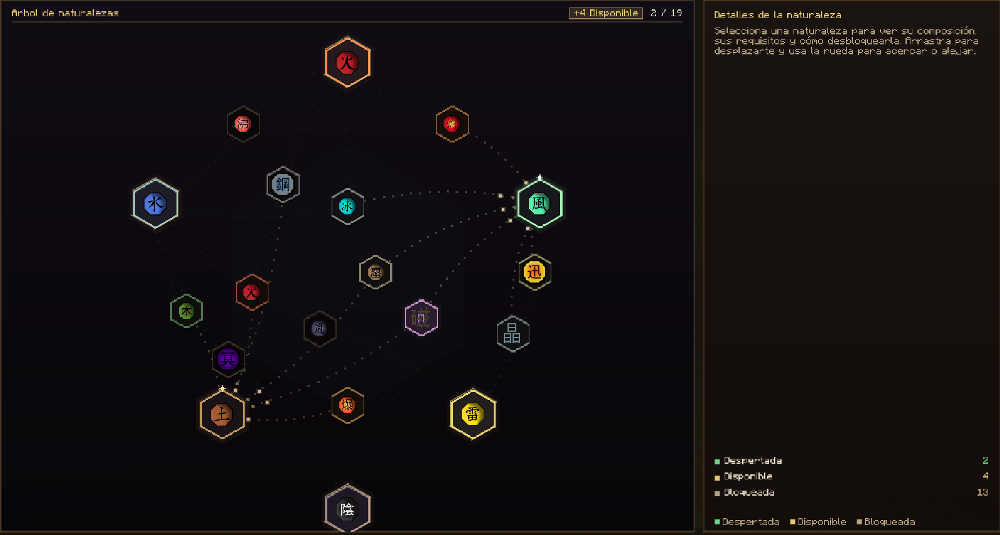

Cómo inyectarte ADN
Un kekkei genkai también se puede conseguir con ADN. Necesitas dos cosas: el ADN y una jeringa vacía.
1
Ten el ADN
Consigue el ADN del kekkei genkai que quieres obtener.
2
Ten una jeringa vacía
Necesitas una jeringa vacía en tu inventario para cargar el ADN.
3
Inyéctatelo
Con la jeringa en la mano, mantén Shift y haz clic derecho para inyectarte el ADN.
Shift + Clic derecho
Árbol de naturalezas
Así se ve en el juego. Cada kekkei genkai está conectado a las naturalezas que lo forman.
